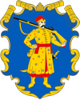
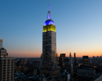
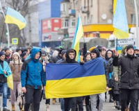
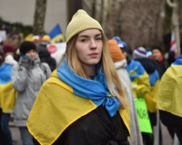
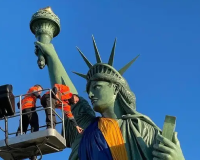
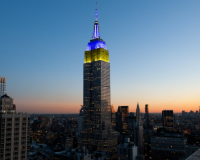
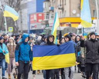
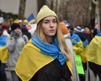
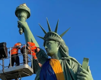

Минуле
Формування ментальності українців
Історія
Фольклор розповідає правду, бо ми учасники, творці історії та представляємо її, так як є
ПовністюУкраїнське козацтво - унікальне явище в історії
Козаки - це державність!
Саме козаки були авторами та реалізато- рами ідеї української держави та її легіти- мації у міжнародній спільноті як незалежної держави
Цінності
Відвага, вірність, здатність до самопожертви, любов до Батьківщини - такі характе- ристики успадкував укра- їнський народ у козаків
Відвага та безстрашність
Турецький літописець Наїма писав про запорожців: “Можна впевнено сказати, що неможливо знайти на цілій землі сміливіших людей, які так мало б дбали про мвоє життя і так мало боялися смерті”
Прагнення до неба
Блакитне небо на прапорі України та жовте жито, ще одна ознака
нашого прагнення думками відірватися від землі та полетіти в
безкрайнє небо, вийти за межі простору.
Саме тому українці реалізовували прагнення вийти за межі за
допомогою розвитку авіаконструкторських заводів.
Підприємство "Антонов" створило гордість України, який став
сиволом українського непереможного духу - "Мрію" - найбільший
транспортний літак у світі.
Сьогодення: період трансформації
Хто ми сьогодні?
Ми показуємо усьому світові як говорити правду в очі та бути вірним своєму народу, своєму вибору та стояти за нього - ми чесні з собою та іншими, відважні та стоїмо один за одного
Ми подаємо приклад всьому світові, як жити в умовах невизначеності, та ще й знаходимо в собі сили підказувати іншим, що робити для підтримки миру у всьому світі - ми креативні.
Ми не піддаємось залякуванню та продовжуємо маленькими кроками досягати своєї мети - ми сильні духом, в нас є воля. Свобода - найбільша цінність для нас.
Ми можемо жити без вказівок, та самоорганізовуватись, спираючись лише на гуманістичні, людські цінності - ми за мир у всьому світі, і ми зможемо показати, як цього досягти.
Продовжуємо жити, працювати та надихати весь світ!
 









.png)
.png)
.png)
.png)
.png)